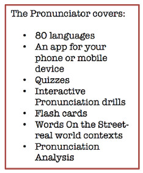

Module 2: Research
Foreign Language Resources
Module 2
Navigation
Online Research
Catalog and Database
Catalog & Database Activity
Foreign Language Resources
Content Specific Websites
Tutoring
Dictionaries, Thesaurus, Encyclopedias
Dictionary Activity
Quote Books
References
Assessment
Certificate
Pronunciator (en Espanol)
